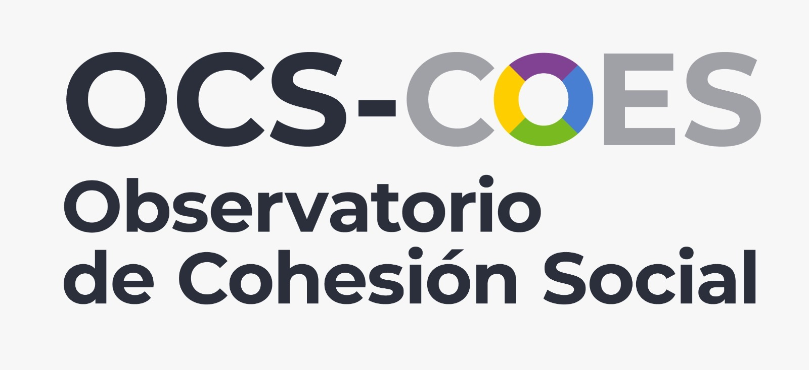
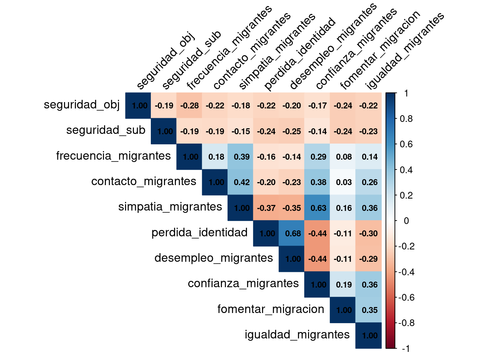
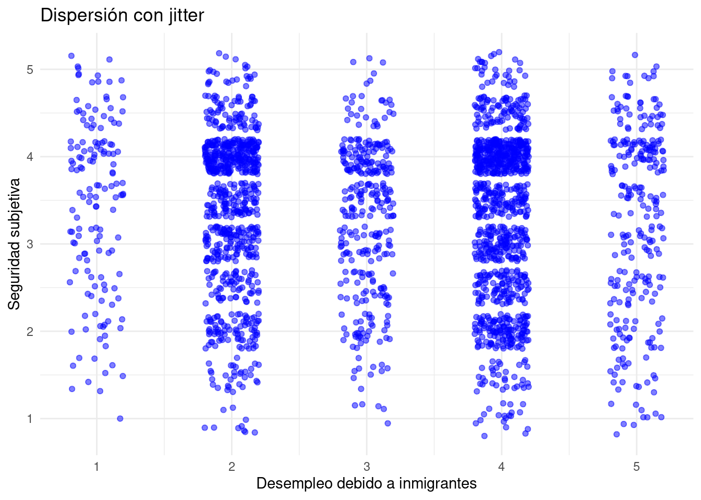
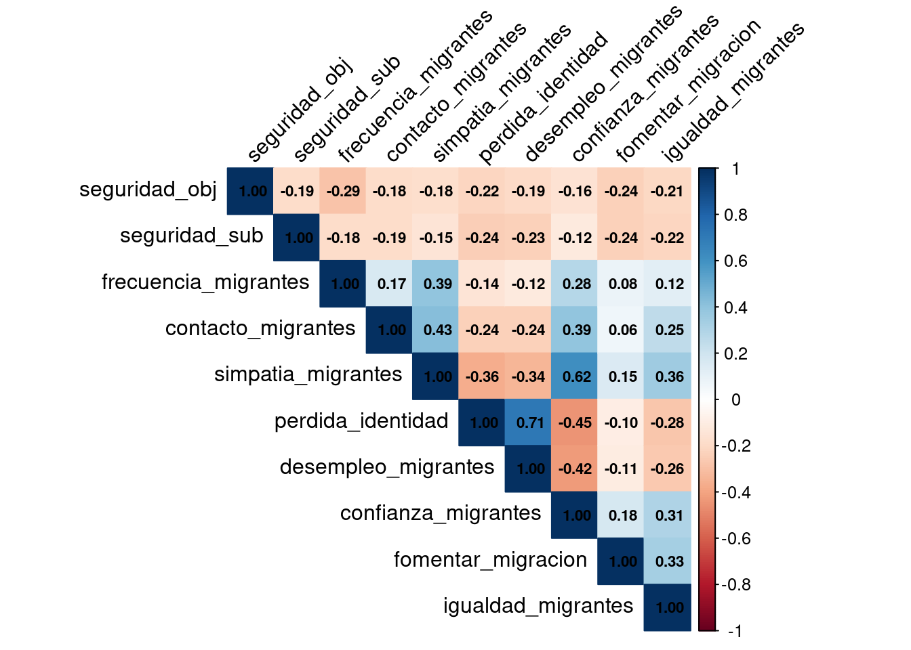
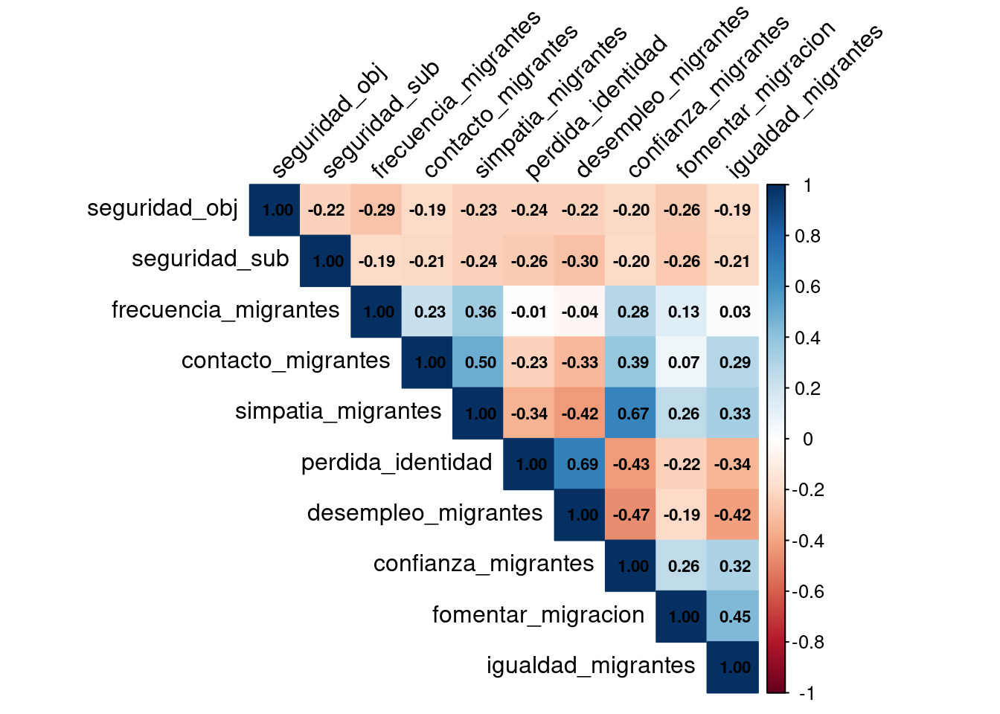
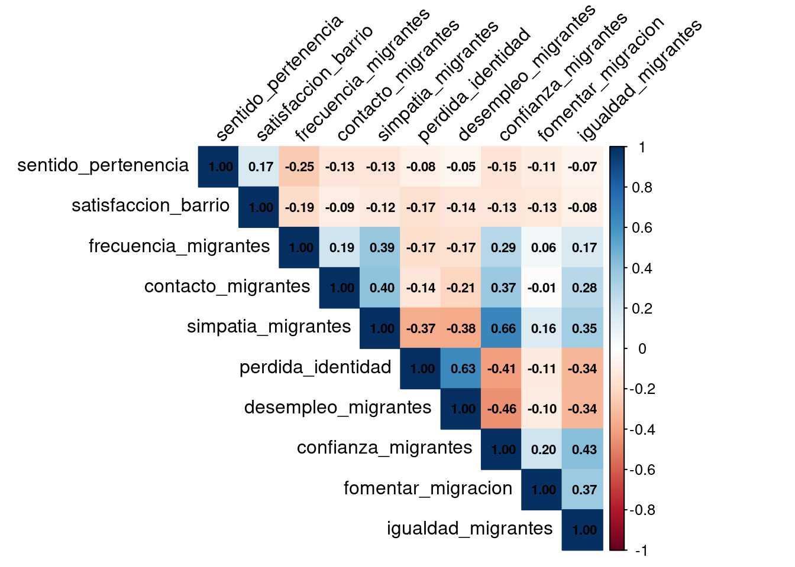
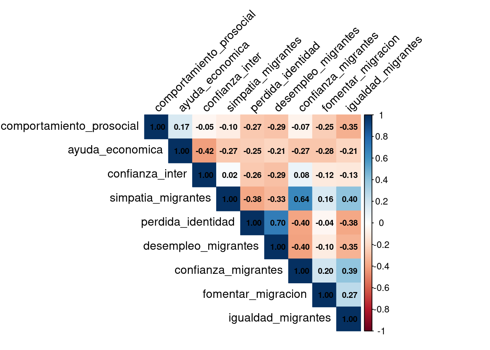
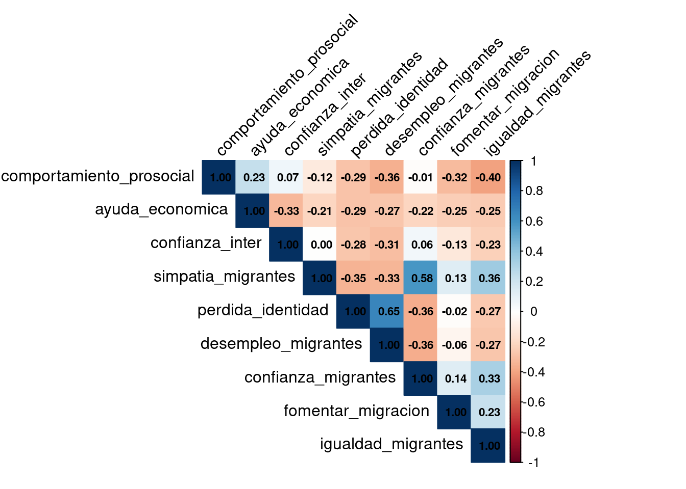

| var | label | n | NA.prc | mean | sd | range | |
|---|---|---|---|---|---|---|---|
| 5 | frecuencia_migrantes | Frecuencia de contacto con [PER/HAI/VEN] | 0 | 100.00 | NaN | NA | -Inf (Inf--Inf) |
| 2 | contacto_migrantes | Contacto positivo con [PER/HAI/VEN] | 0 | 100.00 | NaN | NA | -Inf (Inf--Inf) |
| 8 | simpatia_migrantes | Grado de simpatia por [PER/HAI/VEN] que viven en Chile | 2610 | 4.74 | 2.93 | 1.14 | 4 (1-5) |
| 7 | perdida_identidad | Grado de acuerdo: Chile pierde su identidad con llegada de [PER/HAI/VEN] | 2709 | 1.13 | 2.96 | 1.16 | 4 (1-5) |
| 3 | desempleo_migrantes | Grado de acuerdo: Con llegada de [PER/HAI/VEN] aumenta el desempleo | 2709 | 1.13 | 3.23 | 1.15 | 4 (1-5) |
| 1 | confianza_migrantes | Grado de confianza en [PER/HAI/VEN] | 2654 | 3.14 | 2.53 | 1.02 | 4 (1-5) |
| 4 | fomentar_migracion | Grado de acuerdo: Fomentar migracion de [PER/HAI/VEN] calificados | 2700 | 1.46 | 3.30 | 1.05 | 4 (1-5) |
| 6 | igualdad_migrantes | Grado de acuerdo: Migrantes [PER/HAI/VEN] acceso a salud igualitario | 2720 | 0.73 | 3.89 | 0.79 | 4 (1-5) |

1 Descriptivos de migración
| var | label | n | NA.prc | mean | sd | range | |
|---|---|---|---|---|---|---|---|
| 5 | frecuencia_migrantes | Frecuencia de contacto con [PER/HAI/VEN] | 2729 | 0.04 | 1.85 | 1.13 | 4 (1-5) |
| 2 | contacto_migrantes | Contacto positivo con [PER/HAI/VEN] | 1205 | 55.86 | 3.55 | 0.92 | 4 (1-5) |
| 8 | simpatia_migrantes | Grado de simpatia por [PER/HAI/VEN] que viven en Chile | 2564 | 6.08 | 2.82 | 1.08 | 4 (1-5) |
| 7 | perdida_identidad | Grado de acuerdo: Chile pierde su identidad con llegada de [PER/HAI/VEN] | 2690 | 1.47 | 3.01 | 1.14 | 4 (1-5) |
| 3 | desempleo_migrantes | Grado de acuerdo: Con llegada de [PER/HAI/VEN] aumenta el desempleo | 2708 | 0.81 | 3.17 | 1.15 | 4 (1-5) |
| 1 | confianza_migrantes | Grado de confianza en [PER/HAI/VEN] | 2609 | 4.43 | 2.58 | 1.01 | 4 (1-5) |
| 4 | fomentar_migracion | Grado de acuerdo: Fomentar migracion de [PER/HAI/VEN] calificados | 2698 | 1.17 | 3.33 | 1.09 | 4 (1-5) |
| 6 | igualdad_migrantes | Grado de acuerdo: Migrantes [PER/HAI/VEN] acceso a salud igualitario | 2719 | 0.40 | 3.89 | 0.77 | 4 (1-5) |
2 Creación de índices
Para realizar los cruces de las subdimensiones de la cohesión social con migración, se construyen índices¹ de los promedios de los indicadores que conforman los constructos validados en la sección anterior.
elsoc_5 <- elsoc_5 %>%
mutate(comportamiento_prosocial = rowMeans(select(., reunion_pub, voluntariado), na.rm = TRUE))elsoc_5 <- elsoc_5 %>%
mutate(ayuda_economica = rowMeans(select(., prestar_dinero, ayuda_trabajo), na.rm = TRUE))elsoc_5 <- elsoc_5 %>%
mutate(confianza_inter = rowMeans(select(., confianza_gen, altruismo_gen), na.rm = TRUE))elsoc_6 <- elsoc_6 %>%
mutate(seguridad_sub = rowMeans(select(., seguridad_sat, seguridad_perc), na.rm = TRUE))elsoc_6 <- elsoc_6 %>%
mutate(seguridad_obj = rowMeans(select(., peleas_calle, asaltos, trafico_drogas), na.rm = TRUE))elsoc_6 <- elsoc_6 %>%
mutate(sentido_pertenencia = rowMeans(select(., barrio_ideal, barrio_integracion, barrio_identidad, barrio_pertenencia), na.rm = TRUE))elsoc_6 <- elsoc_6 %>%
mutate(satisfaccion_barrio = rowMeans(select(., barrio_amigos, barrio_sociable, barrio_cordial, barrio_colaborador), na.rm = TRUE))3 Correlaciones
3.1 Correlación seguridad
3.1.1 Correlación de Spearman
corrsegmig <- round(cor(seg_mig, use = "pairwise.complete.obs", method = "spearman"), 2)
La Figura 1 refleja las correlaciones de Spearman entre los índices de seguridad y los indicadores de migración. Se observa la mayoría de los indicadores de migración tienen una correlación bastante baja con ambos índices de seguridad. Las asociaciones más altas las tiene la seguridad subjetiva con confianza en migrantes (.14) y con simpatía hacia los migrantes (.10).
3.1.2 Correlaciones policóricas
poly_cor <- polychoric(seg_mig)

En Figura 2 se observa una matriz de correlaciones policóricas. En este caso, la mayoría de las correlaciones son bajas, destacando seguridad subjetiva con desempleo debido a inmigrantes con un -.25, entiéndose que mientras más acuerdo hay con que la llegada de inmigrantes al país causa desempleo, menor es la sensación de seguridad. En la misma lógica se correlacionan seguridad subjetiva con pérdida de identidad, en donde, a menor seguridad subjetiva, mayor acuerdo con que los inmigrantes hacen que Chile pierda identidad.
Warning: Removed 180 rows containing missing values or values outside the scale range
(`geom_point()`).

En Figura 3 se presenta la distribución de los valores entre seguridad subjetiva y desempleo debido a inmigrantes. Las mayores cantidades de puntos se concentran mayoritariamente en la parte superior (específicamente la categoría 4) de los valores 2 y 4 del indicador de desempleo. Esto presenta una opinión dividida en tanto que, cuando las personas perciben seguridad en su barrio, hay un grupo que está de acuerdo con que los inmigrantes causan desempleo, mientras que el otro está en desacuerdo con este enunciado.
3.2 Correlación vínculos territoriales
3.2.1 Correlación de Spearman
barrio_mig <- elsoc_6 %>%
select(sentido_pertenencia, satisfaccion_barrio, frecuencia_migrantes, contacto_migrantes, simpatia_migrantes,
perdida_identidad, desempleo_migrantes, confianza_migrantes,
fomentar_migracion, igualdad_migrantes)corrbarriomig <- round(cor(barrio_mig, use = "pairwise.complete.obs", , method = "spearman"), 2)
En Figura 4 se pueden ver los cruces entre los índices de vinculación territorial con los indicadores de migración. Las correlaciones entre las mediciones de territorio y la migración son en general bajas, siendo satisfacción del barrio con confianza en migrantes la más alta (.12).
3.2.2 Correlaciones policóricas
poly_cor2 <- polychoric(barrio_mig)En Figura 5 se observa la matriz de correlaciones policóricas que contiene los índices de vinculación territorial e indicadores de migración. La mayoría de las correlaciones son bajas, pero algunas rozando un nivel moderado. El índice de satisfacción de barrio correlaciona en un -.28 con desempleo debido a inmigrantes, entendiéndose que a menor satisfacción con el barrio, mayor acuerdo de que los inmigrantes causan desempleo en el país.
4 Moderación de correlaciones (género y nivel educacional)
4.1 Seguridad por género
seguridad_genero <- elsoc_6 %>%
select(sexo, seguridad_obj, seguridad_sub, frecuencia_migrantes, contacto_migrantes, simpatia_migrantes,
perdida_identidad, desempleo_migrantes, confianza_migrantes,
fomentar_migracion, igualdad_migrantes)seguridad_hombres <- seguridad_genero %>%
filter(sexo==0)
seguridad_mujeres <- seguridad_genero %>%
filter(sexo==1)seguridad_hombres <- seguridad_hombres %>%
select(-c(sexo))
seguridad_mujeres <- seguridad_mujeres %>%
select(-c(sexo))seg0 <- round(cor(seguridad_hombres, use = "pairwise.complete.obs", method = "spearman"), 2)
seg1 <- round(cor(seguridad_mujeres, use = "pairwise.complete.obs", method = "spearman"), 2)

4.2 Seguridad por educación
seguridad_educ <- elsoc_6 %>%
select(educacion, seguridad_obj, seguridad_sub, frecuencia_migrantes, contacto_migrantes, simpatia_migrantes,
perdida_identidad, desempleo_migrantes, confianza_migrantes,
fomentar_migracion, igualdad_migrantes)seguridad_titulo <- seguridad_educ %>%
filter(educacion==1)
seguridad_notitulo <- seguridad_educ %>%
filter(educacion==0)seguridad_titulo <- seguridad_titulo %>%
select(-c(educacion))
seguridad_notitulo <- seguridad_notitulo %>%
select(-c(educacion))seg_educ <- round(cor(seguridad_titulo, use = "pairwise.complete.obs", method = "spearman"), 2)
seg_noeduc <- round(cor(seguridad_notitulo, use = "pairwise.complete.obs", method = "spearman"), 2)

4.3 Vínculos territoriales por género
barrio_genero <- elsoc_6 %>%
select(sexo, sentido_pertenencia, satisfaccion_barrio, frecuencia_migrantes, contacto_migrantes, simpatia_migrantes, perdida_identidad, desempleo_migrantes, confianza_migrantes,
fomentar_migracion, igualdad_migrantes)barrio_hombres <- barrio_genero %>%
filter(sexo==0)
barrio_mujeres <- barrio_genero %>%
filter(sexo==1)barrio_hombres <- barrio_hombres %>%
select(-c(sexo))
barrio_mujeres <- barrio_mujeres %>%
select(-c(sexo))barrio0 <- round(cor(barrio_hombres, use = "pairwise.complete.obs", method = "spearman"), 2)
barrio1 <- round(cor(barrio_mujeres, use = "pairwise.complete.obs", method = "spearman"), 2)

4.4 Vínculos territoriales por educación
barrio_educ <- elsoc_6 %>%
select(educacion, sentido_pertenencia, satisfaccion_barrio, frecuencia_migrantes, contacto_migrantes, simpatia_migrantes,
perdida_identidad, desempleo_migrantes, confianza_migrantes,
fomentar_migracion, igualdad_migrantes)barrio_titulo <- barrio_educ %>%
filter(educacion==1)
barrio_notitulo <- barrio_educ %>%
filter(educacion==0)barrio_titulo <- barrio_titulo %>%
select(-c(educacion))
barrio_notitulo <- barrio_notitulo %>%
select(-c(educacion))barrio_u <- round(cor(barrio_titulo, use = "pairwise.complete.obs", method = "spearman"), 2)
barrio_nou <- round(cor(barrio_notitulo, use = "pairwise.complete.obs", method = "spearman"), 2)4.5 Redes por género
redes_genero <- elsoc_5 %>%
select(sexo, comportamiento_prosocial, ayuda_economica, confianza_inter, frecuencia_migrantes, contacto_migrantes, simpatia_migrantes,
perdida_identidad, desempleo_migrantes, confianza_migrantes,
fomentar_migracion, igualdad_migrantes)redes_hombres <- redes_genero %>%
filter(sexo==0)
redes_mujeres <- redes_genero %>%
filter(sexo==1)redes_hombres <- redes_hombres %>%
select(-c(sexo))
redes_mujeres <- redes_mujeres %>%
select(-c(sexo))redes0 <- round(cor(redes_hombres, use = "pairwise.complete.obs", method = "spearman"), 2)
redes1 <- round(cor(redes_mujeres, use = "pairwise.complete.obs", method = "spearman"), 2)


4.6 Redes por educación
redes_educ <- elsoc_5 %>%
select(educacion, comportamiento_prosocial, ayuda_economica, confianza_inter, frecuencia_migrantes, contacto_migrantes, simpatia_migrantes,
perdida_identidad, desempleo_migrantes, confianza_migrantes,
fomentar_migracion, igualdad_migrantes)redes_titulo <- redes_educ %>%
filter(educacion==1)
redes_notitulo <- redes_educ %>%
filter(educacion==0)redes_titulo <- redes_titulo %>%
select(-c(educacion))
redes_notitulo <- redes_notitulo %>%
select(-c(educacion))redes_u <- round(cor(redes_titulo, use = "pairwise.complete.obs", method = "spearman"), 2)
redes_nou <- round(cor(redes_titulo, use = "pairwise.complete.obs", method = "spearman"), 2)
